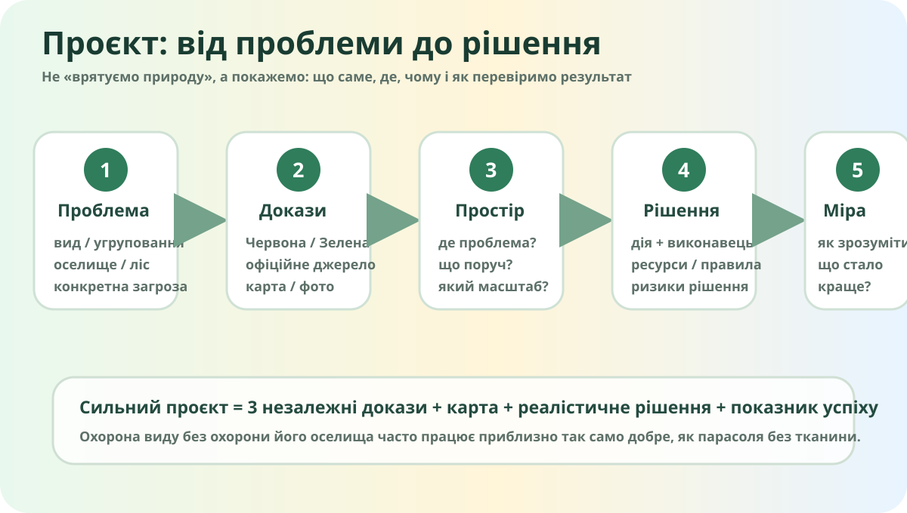

Що саме ми захищаємо?

Локальна схема: проблема → докази → простір → рішення → показник успіху.
Червона книга
Фокус: рідкісні й зникаючі види тварин, рослин і грибів. Запис у Червоній книзі — сигнал, що вид потребує спеціальної охорони.

Рись євразійська. Реальне фото, Wikimedia Commons.
Зелена книга
Фокус: не окремий вид, а рідкісні, зникаючі або типові природні рослинні угруповання. Тобто охороняємо «сцену», без якої акторам теж нема де жити.

ПЗФ
Природно-заповідний фонд — території та об’єкти, виділені для збереження ландшафтів, генофонду рослин і тварин та екологічного балансу.

Для проєкту використовуйте офіційне джерело як основу, а не перший-ліпший переказ.
Де проблема — там і карта
OpenStreetMap. Україна показана цілісно, включно з Кримом.
Карта має щось доводити
- Назвіть територію або об’єкт, який досліджуєте.
- Покажіть, де він розташований і що є поруч.
- Визначте загрозу: фрагментація, вирубування, пожежі, забудова, рекреаційне навантаження, забруднення, інвазивні види тощо.
- Сформулюйте, яку просторову ознаку можна перевірити на карті.
Раціональне ≠ «не рубати ніколи»
Раціональне лісокористування означає поєднання екологічних функцій лісу, відновлення, стійкості та обґрунтованого використання ресурсів.
Держлісагентство: наближене до природи лісівництвоПроблема має компроміси
У природоохоронному рішенні майже завжди є конфлікт інтересів: місцеві жителі, рекреація, лісове господарство, транспорт, туризм, охорона видів.
Зберіть природоохоронний проєкт
Рубрика — 10 балів
проблема
3 докази
карта
рішення
показник успіху
Пітч за 45 секунд
Формула: «Ми досліджуємо… Проблема полягає в… Це підтверджують три докази… Пропонуємо… Зрозуміємо, що рішення працює, якщо…»
45
Фінальний CER
Доведіть проєкт до продукту
Оформіть результат як 1 слайд / постер / цифрову карту: назва, карта, 3 докази з посиланнями, рішення, показник успіху, короткий висновок. Додайте один ризик або обмеження власної пропозиції.